自己写的finux发行版，根文件系统的构建还差点自主性。
# Finux 帮助手册
# 1 安装Finux
# 1.1 获取Finux镜像
在与guide目录同级的iso目录下找到finux.iso镜像文件。
# 1.2 安装测试平台
基于现有的资源，本人分别在VMWare虚拟机和Windows10 x64平台上进行了Finux发行版安装的测试。
# 1.3 在VMWare虚拟机上部署Finux
# 1.3.1 创建虚拟机
打开VMWare Workstation，在笔者的测试机器上，版本为WORKSTATION 15.5 PRO。
-
选择
文件->新建虚拟机打开新建虚拟机向导界面。 -
在开启的新建虚拟机向导界面选择
自定义(高级)(C)，点击下一步(N)>。 -
硬件兼容性选择默认的
Workstation 15.x，点击下一步(N)>。 -
安装来源选择
安装程序光盘映像文件(iso)(M)，点击浏览(R)...选择在之前取得的finux.iso镜像文件。此时会给出警告*“无法检测此光盘映像中的操作系统。您需要指定要安装的操作系统。’’*不需要理会此条信息，点击下一步(N)>。 -
客户机操作系统选择
其他(O)，**版本(V)**选择其他64位，点击下一步(N)>。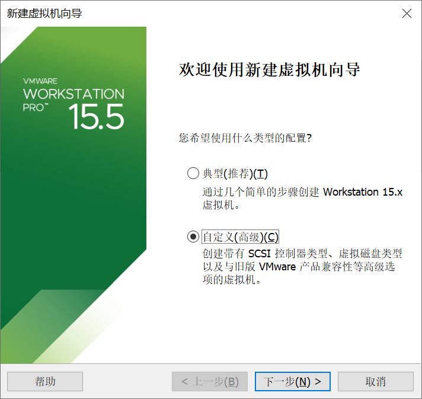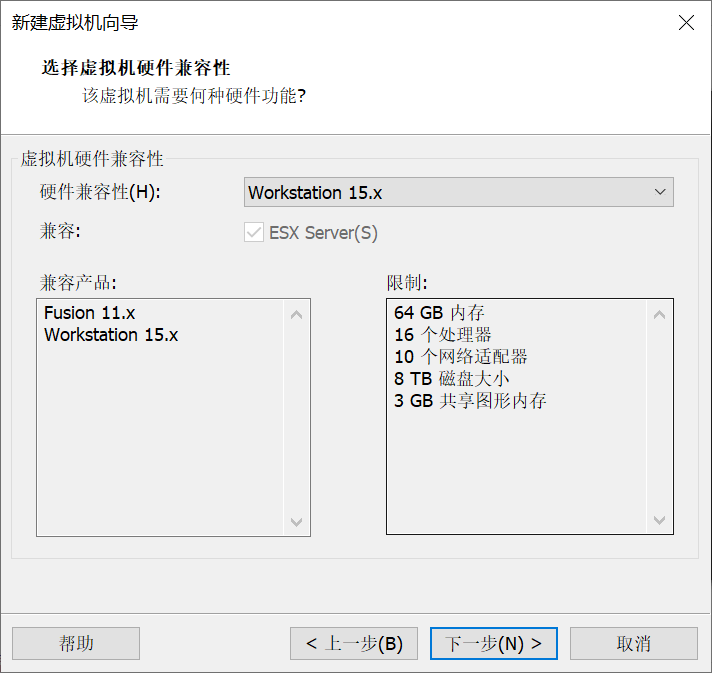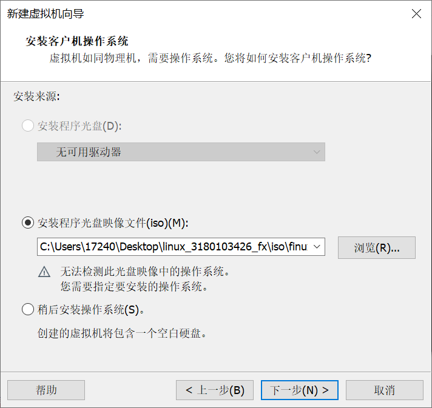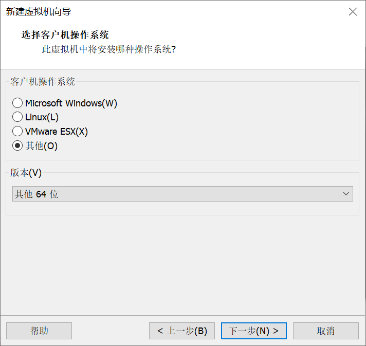 -
虚拟机名称和位置请用户自行选择，点击
下一步(N)>。 -
处理器配置请用户自行选择，点击
下一步(N)>。笔者此处设置处理器数量为1，每个处理器内核数量为2。 -
此虚拟机的内存请用户自行选择，至少分配
1.5GB，点击下一步(N)>。笔者此处设置内存为4GB。 -
网络类型选择
使用网络地址转换(NAT)(E)，点击下一步(N)>。 -
SCSI控制器选择
LSI Logic SAS(S)，点击下一步(N)>。 -
虚拟磁盘类型选择
SCSI(S)，点击下一步(N)>。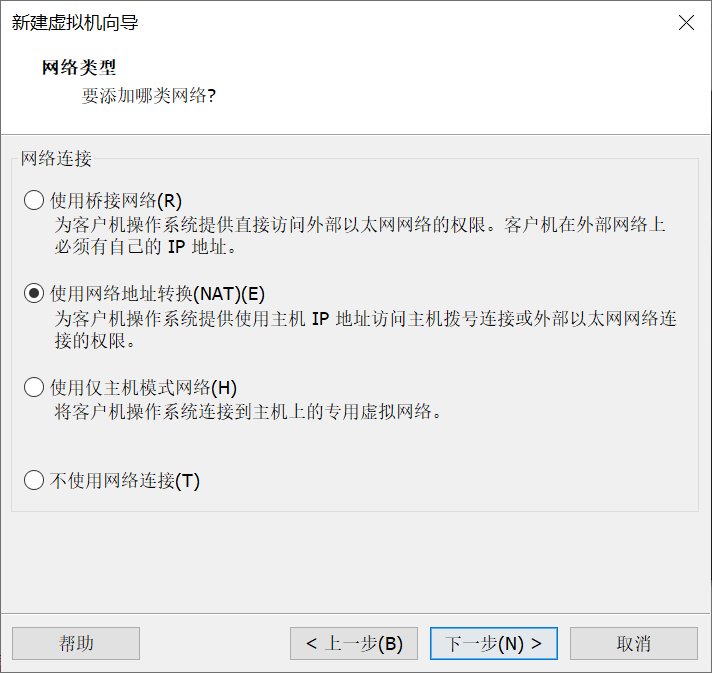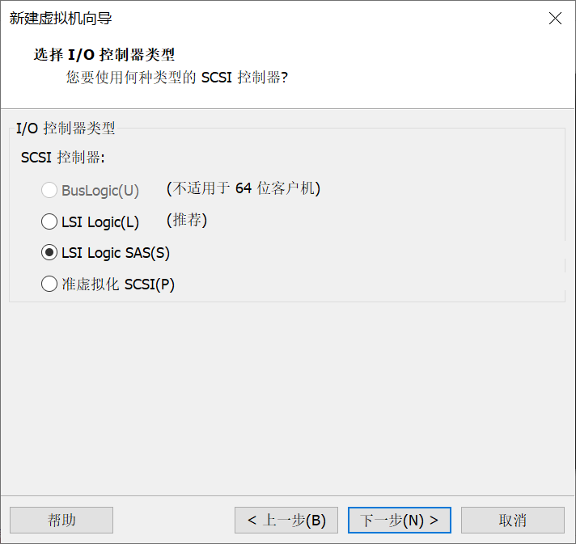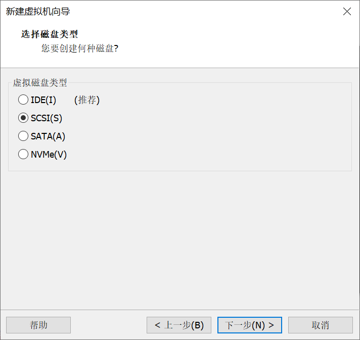 -
磁盘选择
创建新虚拟磁盘(V)，点击下一步(N)>。 -
最大磁盘大小指定为至少
10GB，选择将虚拟磁盘拆分成多个文件(M)，点击下一步(N)>。笔者此处设置为30GB。 -
磁盘文件命名请用户自行选择，点击
下一步(N)>。 -
在已准备好创建虚拟机界面，检查虚拟机配置，点击
完成。
# 1.3.2 配置虚拟机网络
在刚刚创建的虚拟机选项卡中，
-
点击工具栏
编辑->虚拟网络编辑器。 -
在虚拟网络编辑器界面，找到类型为
NAT模式的虚拟网络适配器名称VMnet8。您可能需要点击更改设置来获得管理员权限以浏览全部配置。 -
退出虚拟网络编辑器。依次打开Windows电脑上的
控制面板->网络和Internet->网络和共享中心->更改适配器设置，找到正在使用到的网卡设备。笔者的电脑上为 Intel® Wireless-AC 9560。右键点击此设备，选择属性->共享，勾选允许其他网络用户通过此计算机的Internet来连接，家庭网络连接选择VMware Network Adapter VMnet8，点击确定。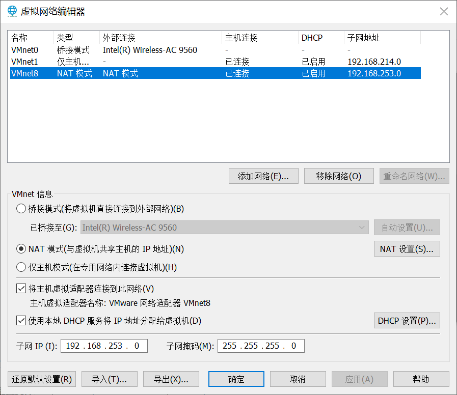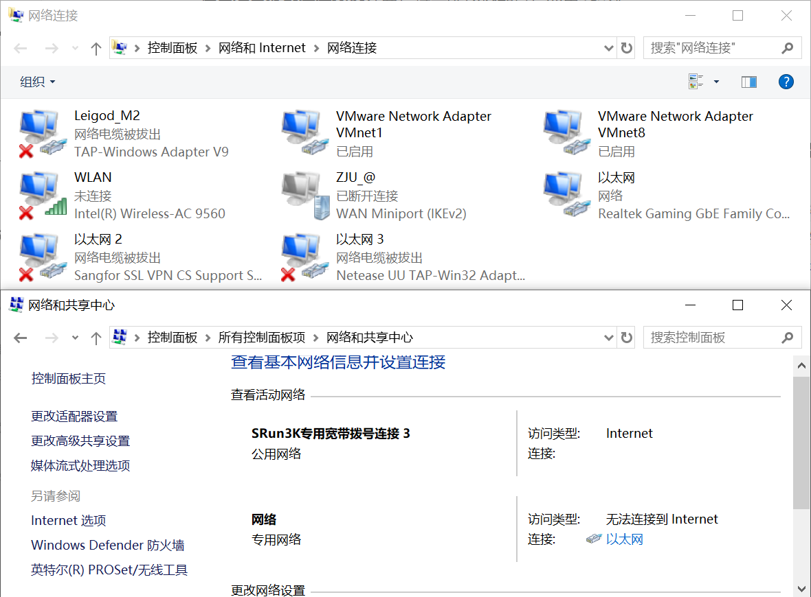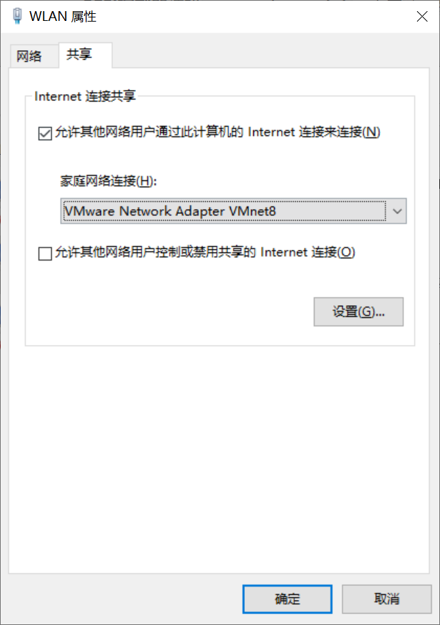
# 1.3.3 启动虚拟机
在刚刚创建的虚拟机选项卡中，
- 点击
开启此虚拟机，然后进入1.5 通用安装步骤。
# 1.4 在Windows10 x64上部署Finux
# 1.4.1 移动存储介质
请您准备一块移动存储介质以供烧录镜像。笔者选用的是USB存储卡。
# 1.4.2 准备硬盘空间
请您准备一块空闲的磁盘空间以供Finux安装使用。
- 右键Windows开始菜单，选择
磁盘管理打开界面。 - 您可以选择使用一整块磁盘安装Finux，或者使用磁盘中的一部分来安装。如果使用后者，请先右键某一块磁盘，选择
压缩卷来获得一块空闲空间。如果使用前者，请确保格式化磁盘之前已经备份好数据，此操作无法复原。
现在您已经准备好Finux系统所需要的硬盘空间了。
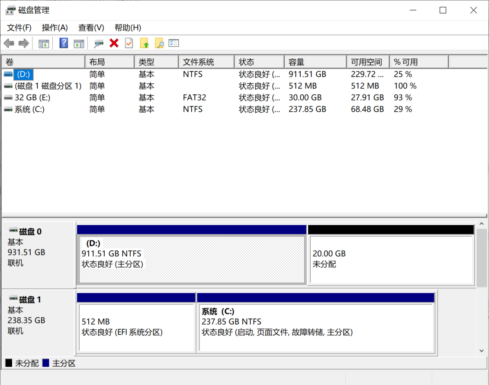# 1.4.3 烧录镜像
现在您需要将Finux镜像烧录进U盘以使得它成为可引导启动的liveCD。
- 在http://rufus.ie/下载
rufus软件。 - 打开
rufus，设备选择准备好的移动存储介质，引导类型选择准备好的finux.iso，分区类型选择MBR，目标系统类型选择BIOS(或UEFI-CSM)。文件系统选择FAT32(默认)，簇大小选择16K字节(默认)，然后点击开始进行烧录。
现在您已经准备好Finux的安装引导硬盘了。
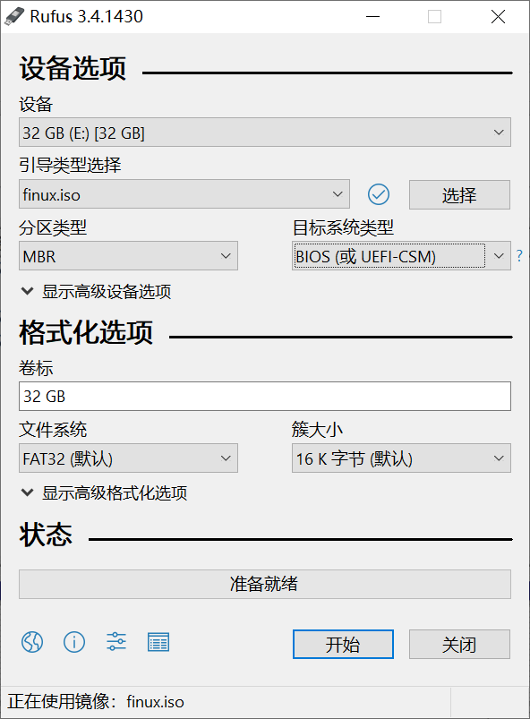# 1.4.4 调整启动选项
重启计算机，进入主板BIOS界面。不同计算机进入BIOS界面的方法不同，BIOS的用户交互界面也不同。 在笔者的计算机上，为按F2键进入界面。
-
调整启动模式为
Legacy启动，即从BIOS启动。 -
允许
USB启动。 -
调整USB介质为第一启动项。
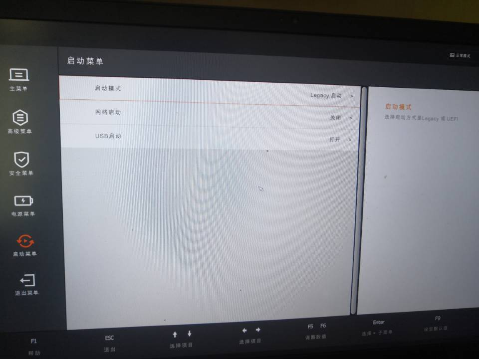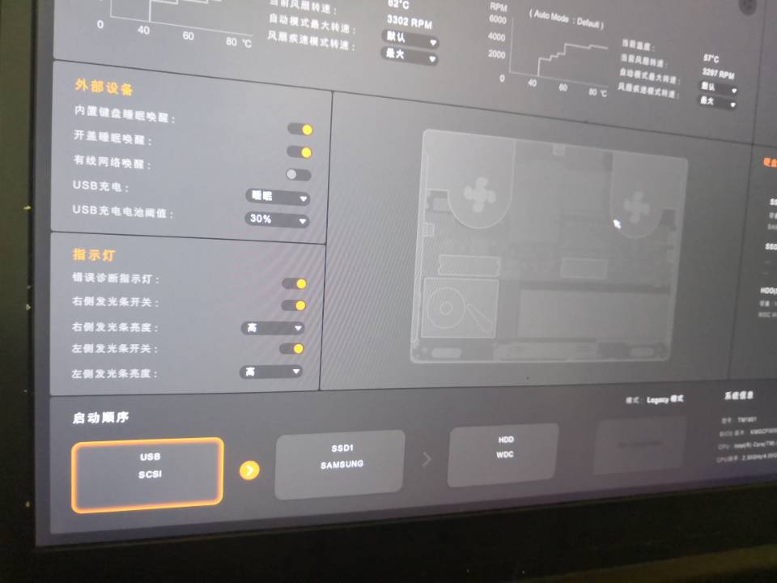 -
保存并退出BIOS界面，进入1.5 通用安装步骤。
# 1.5 通用安装步骤
# 1.5.1 进入安装系统
-
等待引导程序初始化完成后，用户将看到isolinux引导界面。
-
选择第一项
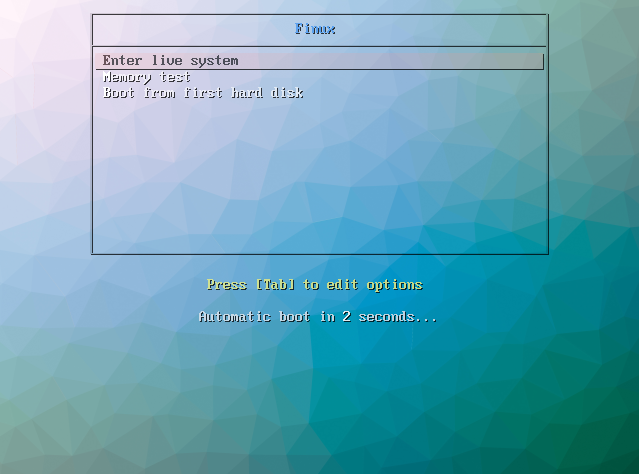Enter live system，回车进入安装系统。 -
KDE桌面环境会自动加载，在经历加载动画后，您就会进入Finux系统桌面。
# 1.5.2 安装Finux
双击启动桌面上的Install程序，进入到安装程序界面。
-
选择您需要的语言，点击
下一步(N)。默认语言为简体中文(中国)。 -
选择您的位置和时区，点击
下一步(N)。默认为亚洲上海。 -
选择您的键盘型号，点击
下一步(N)。笔者选择为English(US) Default。 -
选择您的分区方式，点击
下一步(N)。笔者建议对于使用整块磁盘的用户，直接选择抹除磁盘方式安装。 -
检查您的计算机配置，点击
下一步(N)。 -
等待安装完成，点击
完成重新启动计算机，进入新系统。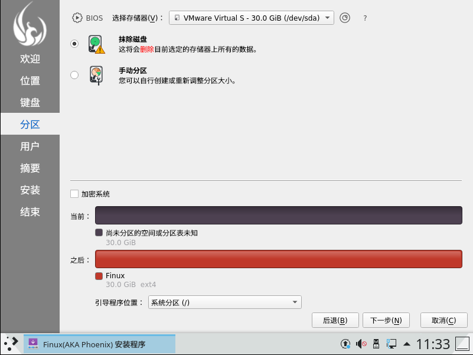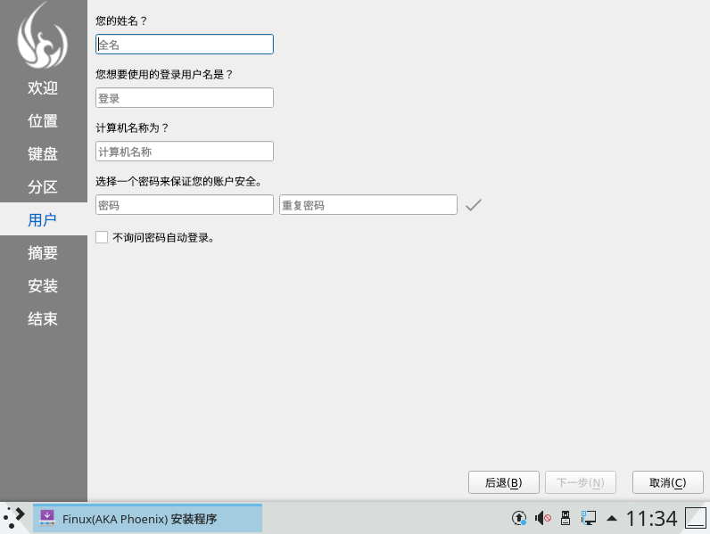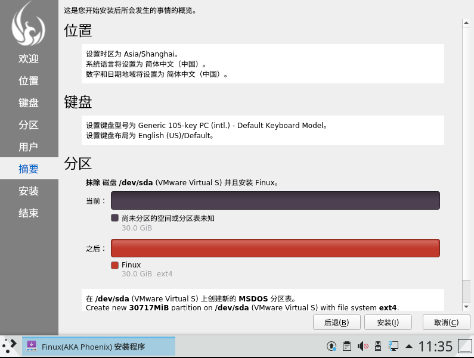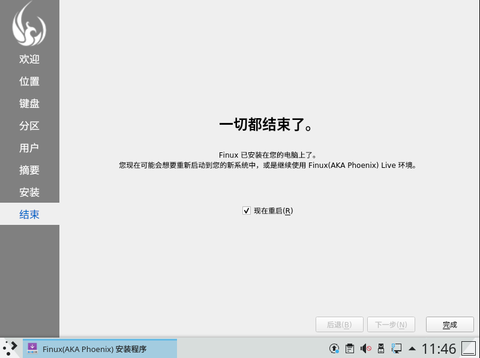
# 1.6 可能出现的问题
-
由于rufus烧录自动添加了isolinux的原因，可能会覆盖原有的引导配置文件，导致启动时识别失败出现如下界面。在此界面下，用户只需输入
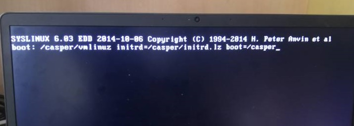/casper/vmlinuz initrd=/casper/initrd.lz boot=casper即可重新进入live系统进行Finux安装。这个操作等同于在isolinux引导界面选择Enter live system。 -
在VMWare虚拟机上启动
Finux-liveCD/Finux时，会出现NetworkManager加载失败的现象。这是由于dhclient进程没能正确初始化引起的，造成原因可能与VMWare的网卡适配器有关。此时用户可以使用alt+ctrl+T呼出终端窗口，输入sudo /sbin/dhclient重新加载dhclient进程即可。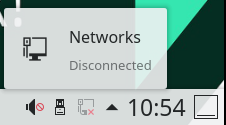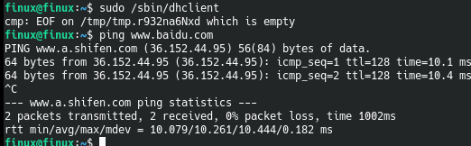
# 2 使用Finux
# 2.1 启动Finux
安装后的Finux使用grub作为引导程序，因此引导界面略有不同：
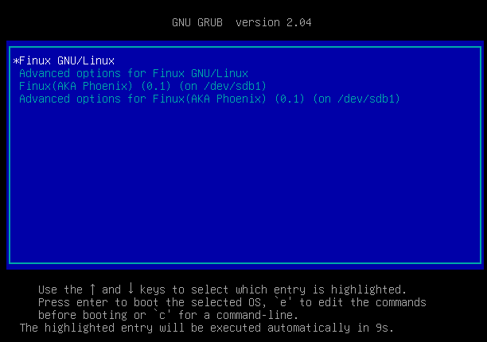# 2.2 系统信息
# 2.3 基本命令使用
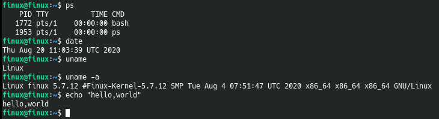# 2.4 基本软件使用
# 3 构建Finux
构建Finux的过程即为构建自制发行版的过程。在本章节中，笔者将在分析linux发行版组成要素的同时讨论如何在实践中构建一个发行版。
# 3.1 发行版的基本构成要素
一个通用的发行版包含以下四个要素：kernel，file-system，bootloader和software。
# 3.1.1 kernel
# 3.1.1.1 vmlinuz
我们平时指代的由linus开发的linux，其实指的是linux的内核。linux的内核是由C语言编写的，它负责存储管理、CPU和进程管理、文件系统、设备管理和驱动、网络通信，以及系统的初始化、系统调用等。在linux系统中，内核的存在形式往往是位于/boot目录下的vmlinuz镜像文件，它是内核编译的产物。
# 3.1.1.2 initrd/initramfs
与kernel镜像成对出现的往往是initrd或者initramfs。bootloader加载系统时，首先装入kernel。然后kernel需要执行文件系统下的/sbin/init，读取这个文件就必须先mount根文件系统。initrd/initramfs可以看做是kernel加载真正根文件系统之前要加载的虚拟根文件系统，它们作为中间跳板被使用。
initramfs 的工作方式相比较来说更加简单直接一些：启动的时候加载内核和 initramfs 到内存执行，内核初始化之后，切换到用户态执行 initramfs的程序/脚本，加载需要的驱动模块、必要配置等，然后加载 rootfs 切换到真正的 rootfs 上去执行后续的 init 过程。
# 3.1.2 file-system
尽管内核是linux的核心，但文件却是用户与操作系统交互所采用的主要工具。这对linux来说尤其如此，这是因为在UNIX传统中，它使用文件I/O机制管理硬件设备和数据文件。
linux的文件系统遵循固定的架构，它包括根目录/以及其子目录/bin，/boot，/home，/root，/var等。它们各有用途，例如，/bin目录下就存放了供用户使用的linux命令的可执行文件，如bash/cat/cp/mv等。
# 3.1.3 bootloader
BootLoader是在操作系统内核运行之前运行。可以初始化硬件设备、建立内存空间映射图，从而将系统的软硬件环境带到一个合适状态，以便为最终调用操作系统内核准备好正确的环境。
# 3.1.4 software
一个linux发行版往往有大量的定制软件包。例如，广受欢迎的Linux Mint就有“开箱即用”的美誉，免去用户在安装系统后还要自己安装一系列满足基本使用需求软件的麻烦。
为了管理这些软件包，常常还需要有软件包管理器。例如debian系的apt和arch系的pacman。
# 3.2 构建根文件系统工作环境
# 3.2.1 Debootstrap
debootstrap是debian/ubuntu下的一个工具，用来构建一套基本的系统(根文件系统)。生成的目录符合Linux文件系统标准(FHS)，即包含了/boot、/etc、/bin、/usr等等目录，但它只能算是“基本的系统”，没有强大的功能。
首先从debian软件仓库获取debootstrap软件包：
1 | # 之后第一行都会指明当前所在的目录，以免混淆 |
安装debootstrap软件包：
1 | # ~/work/debootstrap_src |
❕ 如果您正位于ubuntu操作系统上，这步操作将有不同。debian仓库中的debootstrap和ubuntu中的debootstrap不同，它们构建的文件系统有些许区别。
使用debootstrap从清华源拉取debian的文件系统：
1 | # ~/work/debootstrap_src |
--arch选项用来指定要拉取文件系统对应的CPU架构，笔者的CPU架构是x86_64，因此选择amd64。读者可以使用uname -a命令进行查看。buster是debian系统的版本号，这里也可以选择其他版本号。
现在您已经具有一个基本完备的debian文件系统。
# 3.2.2 更自由化的构建方式
LFS，Linux From Scratch，是一种从源码构建Linux系统的方法。它的自由化可定制程度极高，选择安装哪些内置软件包全部由自己决定，相应的，难度也极大。在完成本版本的发行版开发后，可以考虑将第一步rootfs的搭建替换为lfs。事实上，debootstrap脚本的源码，就是lfs中的一顿折腾。
# 3.3 配置软件包管理器
Finux基于Debian进行开发，使用apt包管理器。
# 3.3.1 apt(debootstrap)
debootstrap拉取的debian文件系统已经自带deb系的apt包管理器。我们只需要更新apt仓库源为阿里源：
1 | # ~/work |
修改源文件如下：
1 | deb http://mirrors.aliyun.com/ubuntu/ focal main restricted |
# 3.3.2 pacman (debootstrap)
如果想使用debian的文件系统，但不想使用deb系的apt，可以采用这种办法。当然，这可能带来隐患。由于我们即将在子系统上编译构建debian，因此我们需要有一个切换到根文件的辅助脚本，帮助我们完成挂载宿主系统的相关信息。
1 | # ~/work |
根切换脚本内容如下：
1 |
|
接着切换到子系统（之后将本机称为宿主系统，本机上的finux文件系统称为子系统）：
1 | # {host} ~/work |
下载pacman源码：
1 | # {finux} / |
安装pacman：
1 | # {finux} /make-distro/pacman |
这之后就可以使用pacman替代apt包管理工具了。
# 3.3.3 pacman/apt (非debootstrap)
如果使用busybox或者lfs构建根文件系统，没有自带包管理器，将不能自动解决包依赖的问题。这时候需要检查pacman/apt的依赖，手动安装所有依赖。例如，在下文将列出apt包的部分逐层依赖：
1 | - apt |
可以看到，apt的依赖非常复杂，包含多层依赖关系。事实上，深层软件包还有可能和浅层软件包依赖发生关系。因此，手动安装包管理工具并不是一件容易的事情，笔者还是推荐搭配debootstrap使用自带的apt管理工具。
# 3.4 编译内核
Finux的内核版本为5.7.12。
# 3.4.1 获取内核
可以在https://www.kernel.org/获得最新的linux kernel文件。
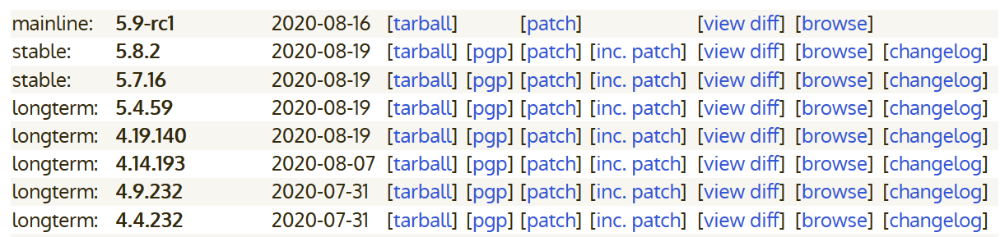我们使用wget命令获取kernel的源码压缩包：
1 | # {finux} / |
压缩包是.tar.xz格式，这是两层压缩。外层是xz压缩，里层是tar压缩，所以分两步实现解压。
1 | # {finux} /make-distro/kernel |
可以看到源代码的结构如下：
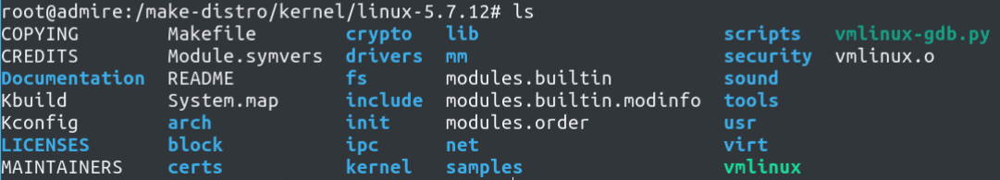# 3.4.2 安装依赖
编译内核之前，我们需要先安装编译工具的相关依赖：
1 | # {finux} /make-distro/kernel/linux-5.7.12 |
# 3.4.3 内核相关配置
linux的内核使用KBUILD系统进行编译，我们可以事先调整KBUILD的参数实现内核参数的定制。相关参数的文档可以在https://www.kernel.org/doc/html/latest/kbuild/kbuild.html查询，也可以直接查看源代码。比如通过查看下面这一段脚本，我们可以知道如何定制内核名字和内核版本。
1 | # {finux} /make-distro/kernel/linux-5.7.12 |
然后启动图形配置界面自动生成kernel编译的相关参数。
1 | # {finux} /make-distro/kernel/linux-5.7.12 |
按→键选择Exit之后回车退出，即可生成配置文件。然后我们就可以开始编译和安装了。
# 3.4.4 编译安装内核
编译内核：
1 | # {finux} /make-distro/kernel/linux-5.7.12 |
如果宿主机的CPU有多个内核，也可以启动多核编译。不过如果出现错误，多核编译因为不是序列式编译，debug会变得更加困难。笔者建议先用多核并行编译，如果出现错误，再用单核编译进行调试。
多核编译，-j参数用于指定使用的CPU内核数量。
1 | # {finux} /make-distro/kernel/linux-5.7.12 |
内核的编译较为费时，需要等待半小时到一小时不等。编译完成后，先进行模块的安装。
❕ 注意此处不需要安装所有模块，下面一句为不推荐的安装指令。这句指令会将所有模块关联到kernel和initrd，造成生成的initrd大小十分巨大（大约600MB），是正常情况下的十倍。如果bootloader使用这个initrd进行启动引导，会导致启动加载变慢，并且对内存要求较高。
1 | # {finux} /make-distro/kernel/linux-5.7.12 |
为解决这个问题，可以加一个跳过不必需模块的参数INSTALL_MOD_STRIP=1。模块安装完成后，就可以进行内核的安装。
1 | # {finux} /make-distro/kernel/linux-5.7.12 |
make install指令会自动在/boot目录下生成vmlinuz和initrd.img镜像和相关配置文件。除此之外，我们还需要检查默认的软链接是否正确。在本机上测试，默认情况下会出错，这个时候就需要纠正：
1 | # {finux} /boot |
# 3.5 图形化环境定制
# 3.5.1 tty登录提示
在目前的情况下，我们还没有安装桌面环境。此时只能通过tty进行用户登录。既然是自制发行版，干脆把tty也做的炫酷一些。
tty的登录提示和欢迎信息由/etc/issue和/etc/motd控制。/etc/issue与/etc/motd区别在于：当一个网络用户或通过串口登录系统 上时，/etc/issue的文件内容显示在login提示符之前，而/etc/motd内容显示在用户成功登录系统之后。 我们先改login提示符之前的信息，也就是/etc/issue。
1 | # {finux} / |
两个文件的内容都改为：
1 | Welcome to Finux(AKA Phoenix) by Feng Xiang \l \m \d |
\d为显示本地端时间日期，\l为显示为第几个tty终端机接口，\m显示硬件架构，\n显示主机网络名称，\s为显示操作系统名称。
接着我们修改/etc/motd。这其实是一个在启动后生成的符号链接，指向/var/run/motd。找到生成的脚本在/etc/update-motd.d中，通过修改其目录下的00-header,20-cpu-cheker,10-help-text等文件可以进行修改。
1 | # {finux} /etc/update-motd.d |
接着tty最后还会调用/etc/legal，我们也对其进行修改。
1 | # {finux} / |
文件中的图形效果由boxes程序生成。
至此tty登录提示定制完成。
# 3.5.2 桌面环境
Finux采用kde桌面环境。选择它的原因是它比较现代化，而且在ArchWiki上有较为详细的文档易于参考。与apt类似的，手动配置依赖安装桌面环境是一个非常折磨人的过程，因此笔者也选择用apt包管理工具自动安装它的依赖。
安装桌面环境之前，我们首先安装桌面环境管理器。kde桌面环境可用的管理器有lightdm和sddm等。Finux使用的是lightdm。
1 | # {finux} / |
接着安装kde桌面环境，这里可以选择安装kde-plasma或者kde-standard。前者为kde桌面环境的最小化安装，可能会缺少一些组件，我们选择安装第二个。
1 | # {finux} / |
检查现有资源：
1 | # {finux} / |
编写lightdm配置文件：
1 | # {finux} /etc/lightdm |
# 3.5.3 登录会话
可以选择安装的登录会话器有lightdm-kde-greeter，lightdm-gtk-greeter和lightdm-unity-greeter等。和kde风格完美适配的是lightdm-kde-greeter，但是不知道为什么，apt软件仓库并没有收录这个软件包。因此Finux采用lightdm-gtk-greeter。
安装lightdm-gtk-greeter：
1 | # {finux} /etc/lightdm |
然后在lightdm的配置文件中添加greeter启动项：
1 | # {finux} /etc/lightdm |
lightdm-gtk-greeter自己的配置文件在同目录下：
1 | # {finux} /etc/lightdm |
我们只讲登录会话的背景设置为黑色。
# 3.5.4 启动动画
启动动画由软件包plymouth控制，已经由脚本debootstrap自动安装进文件系统。更多自定义自动动画可以到https://www.gnome-look.org下载。Finux采用的启动动画可在guide的同级目录build_src/plymouth下找到。将Vinyl.tar.bz复制到根文件系统并解压缩。
1 | # {finux} / |
接着我们进行启动动画的安装。plymouth主题存放路径已经变了，而网络上的主题还是对应的老版路径，那就是/lib/plymouth/themes/，之后已改为/usr/share/plymouth/themes/，所以我们首先更改一下配置文件：
1 | # {finux} / |
修改为如下内容：
1 | [Plymouth Theme] |
然后进行安装：
1 | # {finux} /usr/share |
最后更新一下initramfs完成动画安装：
1 | # {finux} /usr/share |
# 3.6 软件定制
# 3.6.1 通过apt定制
安装文本编辑器Vim：
1 | # {finux} / |
安装火狐浏览器：
1 | # {finux} / |
安装neofetch：
1 | # {finux} / |
# 3.6.2 从网络上获取deb包定制
在与guide同级的build_src/software下找到相应的*.deb软件包。
1 | # {host} ~/work/software |
安装vscode：
1 | # {finux} /make-distro/software |
安装网易云音乐：
1 | # {finux} /make-distro/software |
# 3.7 添加安装器
Finux采用calamares作为安装器。Calamares是一个独立于发行版的系统安装程序，它具有先进的自动化模块序列功能，可以方便地部署在任何发行版上。Ubuntu已经在计划使用Calamares为默认安装器。
# 3.7.1 获取安装calamares
笔者选择从源代码构建calamares：
1 | # {finux} /make-distro |
笔者由于已经使用过宿主机一段时间的原因，在安装其他软件的时候已经安装过依赖文件。若读者想要从源代码构建calamares，可以用apt-cache depends calamares查询calamares相关的依赖：
1 | calamares |
# 3.7.2 相关配置文件
calamares配置的具体说明可以在项目的github界面上找到，这里简单的带过说明。calamares的安装过程遵循用户自定义的模块化序列流程，分为可视化序列和执行序列。其中，可视化序列是和用户交互的窗口；执行序列，则是根据用户的输入，在安装过程中进行的一系列流程。
首先新建calamares的配置文件：
1 | # {finux} /etc/calamares |
以下为settings.conf的 文件内容：
1 | - - -(没有空格) |
这些模块有的需要独立的配置文件，有的则不需要。如果不清楚，可以尝试在终端运行一遍sudo calamares，如若缺少相关配置文件，calamares会给出提示。注意，请在宿主机环境下运行宿主机的calamares进行测试，因为它需要活跃的图形环境。
经测试，对于上述执行序列，需要配置文件的模块有：bootloader, fstab.conf, machineid, partition, welcome, displaymanager, grubcfg, mount, unpackfs, finished, locale, pakages, users。它们的配置放置在/etc/calamares/modules目录下：
这里只展开其中welcome.conf的内容，其他文件可以在与guide同级的build_src/calamares/modules中找到。以下为welcome.conf的内容：
1 | - - -(没有空格) |
这个配置文件描述的是加载启动器后最开始的欢迎界面。其中requirements字段中分别指明了最小安装空间为8G和最小内存需求为500M。事实上，这些数值笔者并没有测试过，因此没有确切保证。之后的required字段指明了需要满足空间、内存需求和root权限。
观察到settings.conf文件中的branding字段使用了finux。这表明在和用户交互的图形化界面中，将使用/etc/calamares/branding/finux文件夹中的配置文件进行定制化。这里只展开它的配置文件branding.desc：
1 | componentName: finux |
这表明安装器将以全屏模式启动，使用指定的图片作为logo和欢迎界面图片。其中slideshow字段指明了安装过程中将使用该脚本进行ppt效果的图片呈现。
其他文件可以在与guide同级目录下的build_src/calamares/branding/finux文件夹下找到。
# 3.8 其他工作
# 3.8.1 添加calamares桌面入口
现在需要在kde桌面环境启动后，添加calamares安装程序的桌面入口。由于文件系统是从零创建的并且桌面环境同样如此，而且live session user是在liveCD的初始化过程被添加的，这就意味着，在我们工作的时候，是没有相关的用户目录和kde桌面配置文件的。因此，我们无法直接在文件系统中添加桌面入口。
幸运的是，lightdm提供了数种hook，给用户在不同的时间段运行不同的脚本。
首先修改lightdm的配置文件：
1 | # {finux} /etc/lightdm |
由于不太清楚这些阶段的边界，因此干脆直接全部调用。然后我们创建“负责创建桌面入口”的脚本：
1 | # {finux} /etc/lightdm |
脚本内容如下：
1 |
|
# 3.8.2 硬件检测软件包
1 | # {finux} / |
# 3.8.3 发行版信息
LSB是Linux Standard Base的缩写， lsb_release命令用来显示LSB和特定版本的相关信息。如果使用该命令时不带参数，则默认加上-v参数。lsb_release相关的配置文件在/etc/lsb-release：
1 | # {finux} /etc |
/etc/os-release与/usr/lib/os-release 文件包含了操作系统识别数据。修改它们的内容如下：
1 | NAME="Finux" |
# 3.9 制作liveCD镜像
linux可以使用grub或者isolinux进行引导。
Finux-liveCD使用isolinux进行引导，Finux使用grub进行引导。
# 3.9.1 casper
casper是配合squashfs使用的一个脚本程序，它会改变initrd的内容。squashfs的全称是squash-file-system，他是一种高度压缩的文件系统，可以大大减小空间占用量。相比较直接使用暴露的文件系统，我们会先将文件系统压缩成squashfs格式，并向bootloader的命令行传入boot=casper参数。
由于initrd混合了casper，它会识别出这个参数并调用casper相应的脚本，将格式为squashfs的文件系统解压出来放入内存。
1 | # {finux} / |
# 3.9.2 isolinux
syslinux是一个轻量级的启动装载器，只用Windows的人可能不明白是什么东西，如果玩过Linux，一定知道lilo和grub，是的，所谓轻量级我想就是跟grub们相比而言的，尤其是grub2。syslinux有很多变种（都是官方的）适用于各种媒质，如syslinux用于从微软的文件系统fat 16/32引导，isolinux用于从光盘引导，pexlinux用于从网络引导，extlinux用于从ext2/3文件系统引导。
下面的内容在宿主机环境中操作。
在与guide目录同级的build_src/syslinux文件夹下找到syslinux源码压缩包，解压并安装。
1 | # {host} ~/work/syslinux |
# 3.9.3 制作镜像
首先下载squashfs压缩工具和制作镜像工具：
1 | # {host} ~/work |
接着创建镜像相关文件夹：
1 | # {host} ~/work |
接着我们要把根文件系统压缩成squashfs格式，我们使用一个脚本gen-sfs.sh完成这件事：
1 |
|
其中-e参数表示剔除该文件夹不计入压缩归档。
接着我们需要将在rootfs/boot中的vmlinuz和initrd复制到外部。这是因为，isolinux视图加载核和虚拟文件系统之前，根文件系统并没有被解压出来，待在其中的vmlinuz和initrd也就无法访问，因此需要将它们暴露在外部。
1 | # {host} ~/work |
这之后，我们需要进行isolinux的配置。
1 | # {host} ~/work |
文件内容如下：
1 | UI vesamenu.c32 |
在这个配置文件中，笔者定义了三个启动入口。其中第一个入口为安装系统liveCD，第二个入口为内存自检。isolinux_background.png为背景图片，可以在与guide目录同级的build_src/isolinux目录下找到。
然后我们需要将isolinux的相关模块放进isolinux和install文件夹。比如在上面的配置中，我们就显式得使用了vesamenu.c32模块。
1 | # {host} ~/work |
❕ 这里本来应该使用/usr/lib/syslinux/modules/bios/中的c32模块，但是奇怪的是我编译出的6.04版本的syslinux似乎不兼容5.7.12的内核，会引发kernel panic错误。于是我换成了6.03版本的编译产物，可以在build_src/isolinux/modules下找到。
最后就只剩下制作镜像了，我们依旧使用一个脚本gen-image.sh来帮助完成这件事：
1 |
|
可以看到，在制作镜像之前，我们还写入把镜像相关的信息付给了磁盘标识符.disk文件夹，这个文件夹在casper脚本执行的过程中也会被用到。
最后运行脚本，大功告成！
1 | # {host} ~/work |
# 4 心得和体会
作为一个刚刚接触linux系统、各种意义上的小白，在上课听说季老师说可以自己写发行版的时候，我内心感到激动又向往——如果能有一个自己的发行版，那该是多么酷的一件事！但是，这个梦想实施起来的过程却异常艰辛。
首先，网络上关于制作linux发行版资料很少、并且简略，它们大多都互相抄袭，最终指向Linux From Scratch。而Linux From Scratch仅仅是从零搭建根文件系统的流程，离真正的发行版相差甚远，并且难度对于初学者来说异常高。在这样的情况下，我只能上Stack Overflow，Ask Ubuntu，Super User等论坛先咨询方向。然后再根据零星的关键词找到零星的软件，再查看诸如Ubuntu Wiki，Arch Wiki之类的文档。这个过程非常考验我独立解决问题、浏览文档的能力。
然而有很多问题是文档和论坛都不会有的。比如为什么会出现kernel panic？这串exit code代表了什么？我需要首先查看错误码的含义，猜测问题出现在内存大小上，然后再定位到大小过大的initrd，然后再找到编译内核过程中的问题，逐渐细化并解决问题。再比如calamares安装器的相关使用，相比较其他的开源项目，它的文档编写实在是太差了。差到需要亲自去查看它的源代码才能明白配置文件该怎么写。需要看源代码的还有casper，由于casper的安装会更改initrd（这是我之后才知道的），出现问题后我就解压initrd看其中的init内容，发现调用了casper脚本，再去casper脚本源码中找到确实了.disk信息。
我觉得，做发行版可能不能提升太多脚本编写的能力，但会大大加强对系统底层的认识。从bootloader，kernel，initramfs。再到/sbin/init，casper和squashfs，紧接着再到systemd，xorg，再到lightdm和DE，一个系统从启动到运行的阶段被拆分开来，清晰地呈现在我的眼前。在配置lightdm的时候，我曾经遇到过很奇怪的问题：kde的桌面环境总是加载失败。为此，我查看了/var/log下的错误日志，发现是xorg没有被授予相关权限，导致初始化失败。而这仅仅是因为我不小心用了chown修改了文件夹所有者。
总的来说，这个发行版还有很多可以完善的地方。首先，它使用现成的脚本来搭建rootfs，但是其实lfs提供了一套更自由的从零开始的方法。其次，由于使用apt的原因，它并没有自己的软件包仓库，一个完整的发行版应该有自己的软件包仓库和软件包管理器。最后，比起把所有软件集成到liveCD中，可以在image中建立partial mirror，使得安装器在安装过程中自动集成相关软件包。希望在以后的学习生活中，可以继续完善FInux！